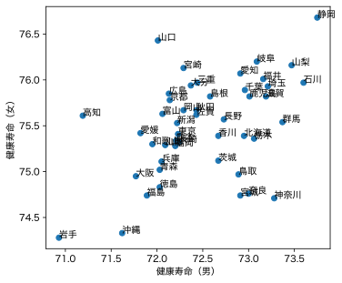
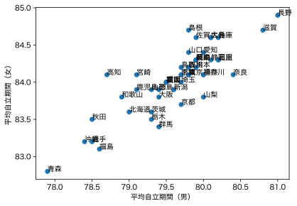
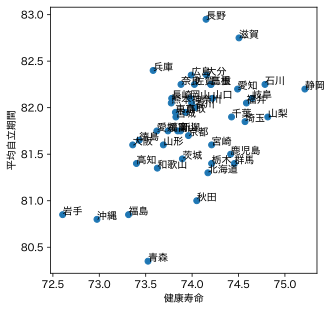

健康寿命については、厚労省第４回 健康日本21（第三次）推進専門委員会 資料にある健康寿命の令和４年値について（PDF）に掲載されている。ここでの健康寿命は「日常生活に制限がない期間の平均」とされているが、あまり厳密な定義ではなさそうである。
PDFからデータを拾い出して kenkoujumyou2022.csv に収めた。男女ごとにプロットしてみよう。
import pandas as pd
import matplotlib.pyplot as plt
df = pd.read_csv("kenkoujumyou2022.csv")
plt.scatter(df["men"], df["women"])
plt.axis("scaled")
plt.xlabel("健康寿命（男）")
plt.ylabel("健康寿命（女）")
for _, row in df.iterrows():
plt.text(row["men"], row["women"], row["kenmei"])

一方、国民健康保険中央会の平均自立期間には「要介護2以上を不健康な状態とみなした場合」という注釈がある。
df2 = pd.read_excel("240624_3211_heikinjiritukikan-kenbetu_240624.xlsx", skiprows=7, nrows=47, header=None)
plt.scatter(df2[2], df2[5])
plt.axis("scaled")
plt.xlabel("平均自立期間（男）")
plt.ylabel("平均自立期間（女）")
for i, j, k in zip(df2[2], df2[5], df["kenmei"]):
plt.text(i, j, k)

両者の関係は、こちらで教えていただいた。
男女を平均して両者の関係をプロット：
plt.scatter((df["men"]+df["women"])/2, (df2[2]+df2[5])/2)
plt.axis("scaled")
plt.xlabel("健康寿命")
plt.ylabel("平均自立期間")
for i, j, k in zip((df["men"]+df["women"])/2, (df2[2]+df2[5])/2, df["kenmei"]):
plt.text(i, j, k)

Last modified: